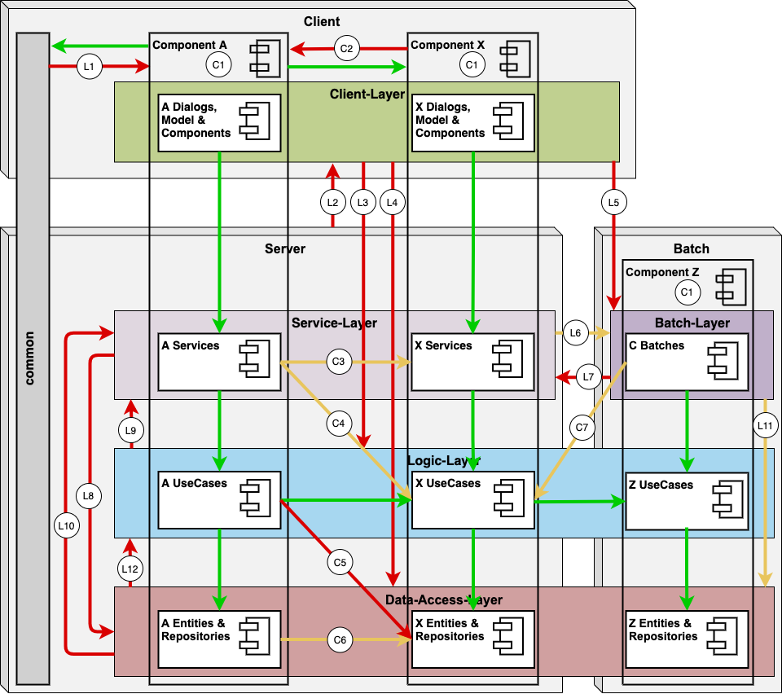
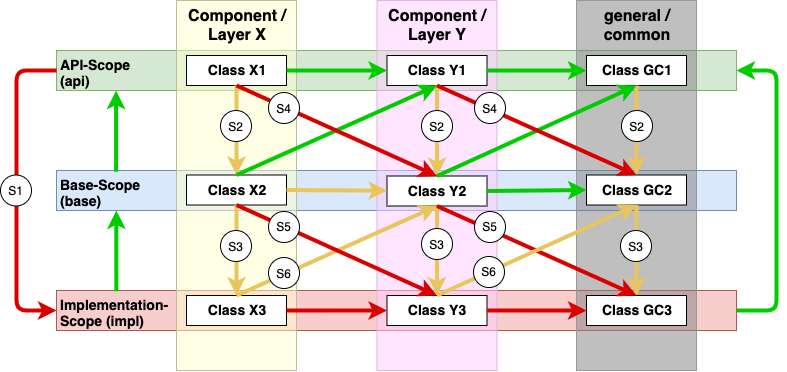

Architectural Dependency Rules
The following image illustrates the devonfw architecture rules. The arrows show the allowed dependencies in green, discouraged dependencies in orange and forbidden dependencies in red. 
{kind=link}
Within the same component you are always allowed to call code from the same layer and scope as well as the API from the next layer below. Discouraged and forbidden dependencies are always implemented by its own SonarQube rule. This gives you absolute flexibility to customize the severity of such architecture violation. These dependencies have a white circle with a unique label. For each label we link the according rule to give you transparency and help you customizing.
Component Rules
The following component rules will rely on the architecture.json configuration described above.
Scope Rules
Further there are additional rules to check the scope: 
{kind=link}
Package Rules
Additionally, there is a generic rule that checks the devonfw packaging conventions:
Naming Convention Rules
With our 3.2.0 release, we added rules checking for adherence to our naming convention rules: